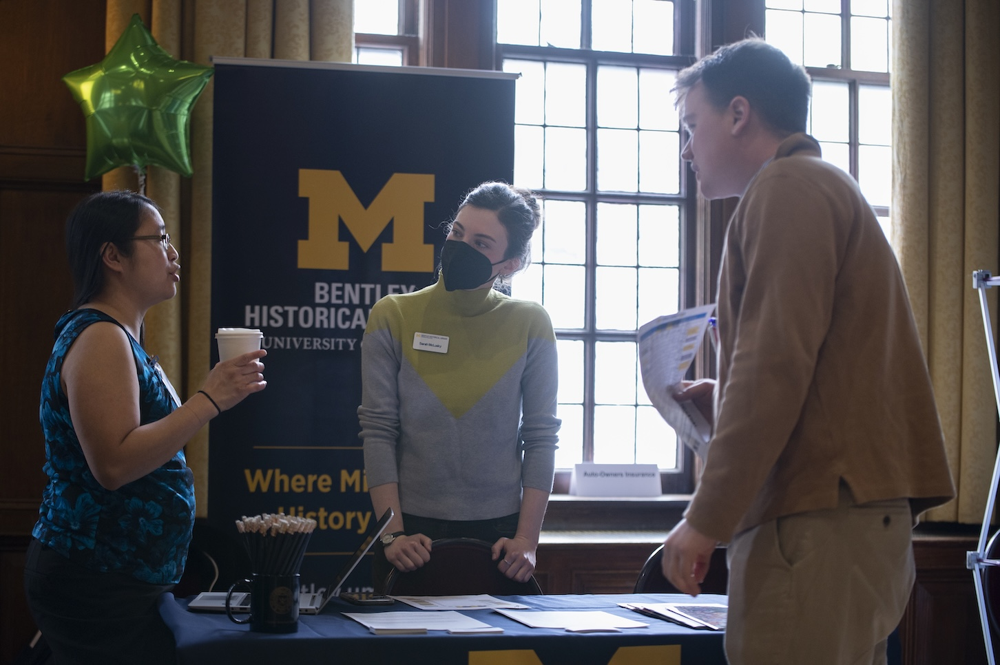
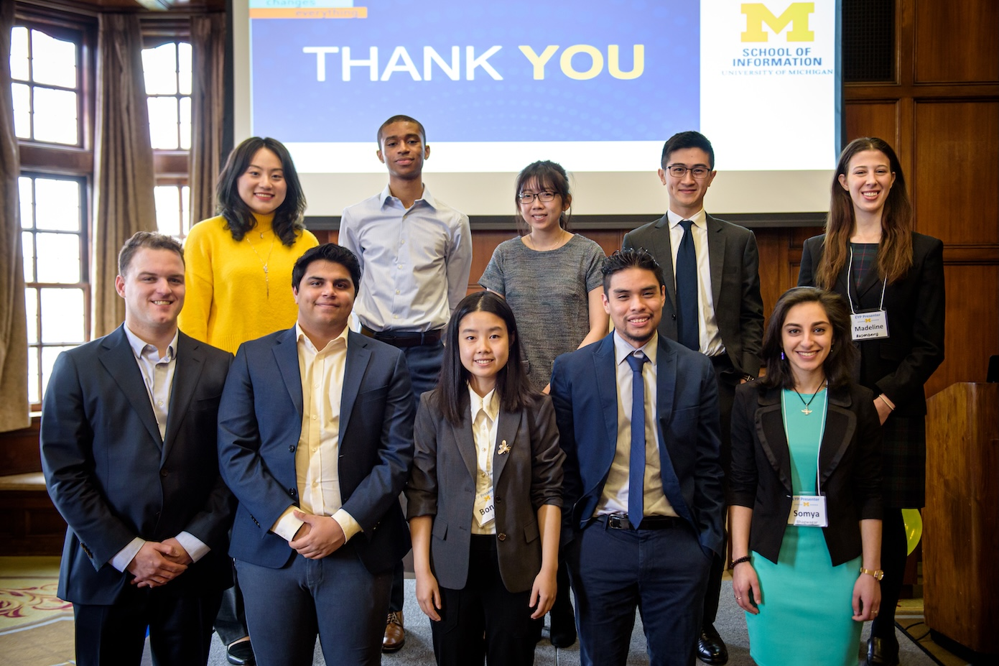

Planning Your Job & Internship Search
Why Planning Matters
A well-structured job or internship search can save you time, reduce stress, and increase your chances of success. By setting goals and tracking your progress, you’ll stay focused and organized throughout the process.
Steps to Plan Your Search
- Self-Assessment: Identify your strengths, skills, and career interests.
- Research: Explore industries, companies, and roles that align with your goals.
- Timeline: Map out deadlines for applications, networking, and interviews.
- Materials: Prepare your resume, cover letter, and LinkedIn profile.
- Track Progress: Use a spreadsheet or tool to keep track of applications.
What Jobs to Explore
Library & Archives
Product Management
Health Informatics
Nonprofit & Public Sector
